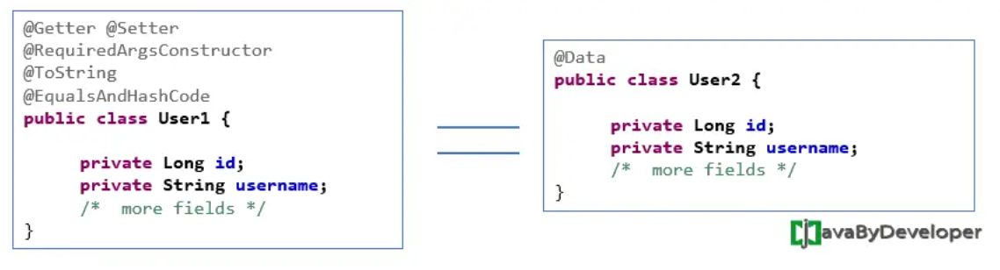

Spring Data JPA
JPA
JPA(Java Persistence API) 是 SUN 針對 ORM 技術提出的規範，目的為簡化持久化的開發工作以及整合各家 ORM 技術(Hibernate、TopLink、OpenJpa…)。
Spring Data JPA
Spring Data JPA 是 Spring 根據 ORM 框架和 JPA 規範而封裝的 JPA 應用框架，目的是降低存取資料層的工作量，讓開發人員只需寫出 repository 的介面，而 Spring 自動幫你實作其功能。
- 依賴
<dependency>
<groupId>org.springframework.boot</groupId>
<artifactId>spring-boot-starter-data-jpa</artifactId>
</dependency>
<!--推薦用 lombok-->
<dependency>
<groupId>org.projectlombok</groupId>
<artifactId>lombok</artifactId>
<optional>true</optional>
</dependency>
- 配置 Datasource (以單個資料庫為例)
spring:
datasource:
url: jdbc:mysql://172.31.93.122:3306/db
username: user
password: password
driver-class-name: com.mysql.cj.jdbc.Driver
jpa:
hibernate:
ddl-auto: update
show-sql: false
properties:
hibernate:
format_sql: true
database-platform: org.hibernate.dialect.MySQL8Dialect
- 實作 User 與 Todo，兩者為一
(User)對多(Todo)的關係。
@Data
@Builder
@Entity
@Table
public class User {
@Id
@GeneratedValue(strategy = GenerationType.IDENTITY)
Integer id;
@Column
public String name;
@Column(insertable = false, columnDefinition = "int default 1")
Integer gender = 1;
@Column
public String password;
@JsonManagedReference
@OneToMany(cascade = CascadeType.ALL, mappedBy = "user")
@EqualsAndHashCode.Exclude
private Set<Todo> todos;
}
** 註解說明
@Data Equivalent to @Getter @Setter @RequiredArgsConstructor @ToString @EqualsAndHashCode. <>
參考資料:https://javabydeveloper.com/lombok-data-annotation/
@EqualsAndHashCode: 標註在類別上，Lombok 會自動實作 equals(Object other) 與 hashCode()。實作者兩者的方法是為了比對兩物件是否相等時，且比對時比較有效率。
讀者可想成自己在逛書店，並透過書名來找書。一般來說，書櫃上會標示那一區的書籍分類。那麼透過書名來決定該前往哪一區尋找，相當於計算 hash code、找出 bucket 的過程。接著，因為一個區域仍有許多書籍，所以我們得一一比對它們的書名。就如同在 bucket 中，呼叫 equals 方法比對 key 的過程。參考自 https://chikuwa-tech-study.blogspot.com/2022/01/java-equals-hashcode-hashmap.html
@GeneratedValue(strategy = GenerationType.IDENTITY) 主鍵由資料庫控制，自動增長。
@Column 從定義可以看出，@Column註解一共有10個屬性，這10個屬性均為可選屬性，各屬性含義分別如下： 1、name name屬性定義了被標註欄位在資料庫表中所對應欄位的名稱； 2、unique unique屬性表示該欄位是否為唯一標識，預設為false。如果表中有一個欄位需要唯一標識，則既可以使用該標記，也可以使用@Table標記中的@UniqueConstraint。 3、nullable nullable屬性表示該欄位是否可以為null值，預設為true。 4、insertable insertable屬性表示在使用“INSERT”指令碼插入資料時，是否需要插入該欄位的值。 5、updatable updatable屬性表示在使用“UPDATE”指令碼插入資料時，是否需要更新該欄位的值。insertable和updatable屬性一般多用於只讀的屬性，例如主鍵和外來鍵等。這些欄位的值通常是自動生成的。 6、columnDefinition columnDefinition屬性表示建立表時，該欄位建立的SQL語句，一般用於通過Entity生成表定義時使用。（也就是說，如果DB中表已經建好，該屬性沒有必要使用。） 7、table table屬性定義了包含當前欄位的表名。 8、length length屬性表示欄位的長度，當欄位的型別為varchar時，該屬性才有效，預設為255個字元。 9、precision和10、scale precision屬性和scale屬性表示精度，當欄位型別為double時，precision表示數值的總長度，scale表示小數點所佔的位數。 https://www.796t.com/content/1547656050.html
@CreatedDate 資料新增時會自動存入創建時間 @CreatedBy 創建者 @LastModifiedDate 最後修改時間 @LastModifiedBy 最後修改者 https://hackmd.io/@winnienotes/ry-62tqZ9